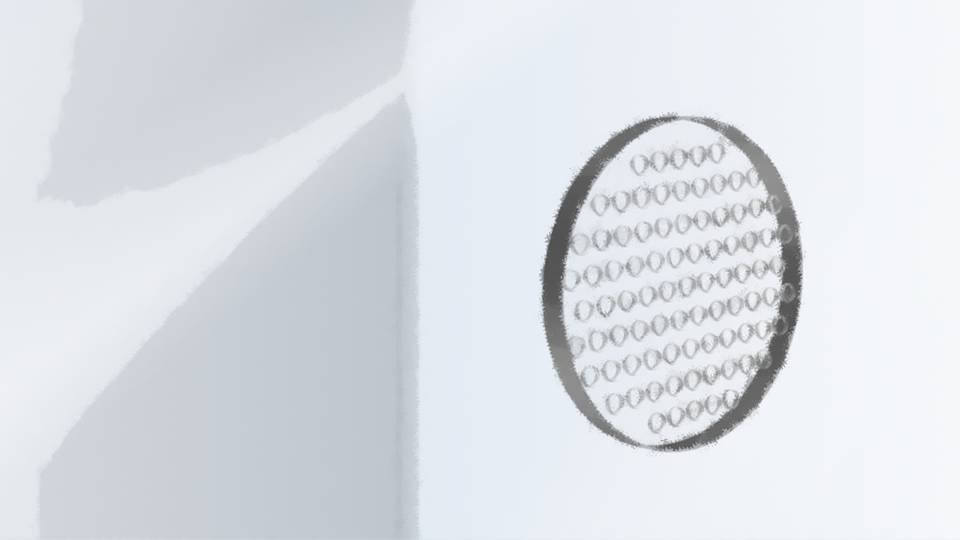

Script 000020A8

「…………」
「どうしたの？ 今日は元気ないわね」
「ちょっと……今日は暑くてね。 もう八月だから」
「どうしたの？ 今日は元気ないわね」
「ちょっと……今日は暑くてね。 もう八月だから」
「ねえなつみ、この前二十歳になったわよね？
おめでとう。何もプレゼントしてあげられないけど……」
「うん……ありがとう」
「ほんとにどうしたの？」
「うん……ありがとう」
「ほんとにどうしたの？」
「一昨日、お母さんの弁護士さんと会ったんだ。呼び出されてね」
「…………」
「私たちの関係、聞いたよ。春花と私のこと」
「そう……」
「…………」
「私たちの関係、聞いたよ。春花と私のこと」
「そう……」
「どうせなら、もっと早く言ってほしかった」
「…………」
「春花がいなくなってもう3年。 私、今でも春花が心配。 その上、本当の姉妹だなんて聞いたら……」
「ごめん……」
「私自身、何を望んているのか分からない。 お母さんに謝ってほしいのか、それとも事情を聞かせてほしいのか」
「…………」
「春花がいなくなってもう3年。 私、今でも春花が心配。 その上、本当の姉妹だなんて聞いたら……」
「ごめん……」
「私自身、何を望んているのか分からない。 お母さんに謝ってほしいのか、それとも事情を聞かせてほしいのか」
「…………」
「ううん、ごめん。そんな簡単な事情じゃないって分かってるよ。 弁護士さんから、春花が養子になった経緯も簡単だけど聞いたし」
「本当は今日、私の口からそのことを言おうと思っていたの。 でも、弁護士にそんなお願いしていたかもしれないわね。 ごめん、大事なことなのに、うろ覚えで」
「ううん、ごめん。そんな簡単な事情じゃないって分かってるよ。 弁護士さんから、春花が養子になった経緯も簡単だけど聞いたし」
「本当は今日、私の口からそのことを言おうと思っていたの。 でも、弁護士にそんなお願いしていたかもしれないわね。 ごめん、大事なことなのに、うろ覚えで」
「春花のこと、どう思ってたの？」
「春花ちゃんは新村家に養子に出した。だからもう、あの子は新村家の子。 でも…… でも、やっぱりそんな簡単に割り切れるものじゃない。 養子に出したことを後悔してたわけじゃないけど、自分が母親って名乗れなかったのは、もどかしかったわね」
「春花ちゃんは新村家に養子に出した。だからもう、あの子は新村家の子。 でも…… でも、やっぱりそんな簡単に割り切れるものじゃない。 養子に出したことを後悔してたわけじゃないけど、自分が母親って名乗れなかったのは、もどかしかったわね」
「春花のこと、大事に思っていたの？」
「もちろんよ。だから美冬から女ケ沢市に呼び出された時、春花ちゃんも守らなきゃいけないって思ったわ。 だから……」
「そっか……。 やっと自分の気持ち、理解できた。 私、お母さんに『春花が大事』って言ってほしかったんだと思う。 お母さん、そんなそぶり全然見せなかったからさ」
「もちろんよ。だから美冬から女ケ沢市に呼び出された時、春花ちゃんも守らなきゃいけないって思ったわ。 だから……」
「そっか……。 やっと自分の気持ち、理解できた。 私、お母さんに『春花が大事』って言ってほしかったんだと思う。 お母さん、そんなそぶり全然見せなかったからさ」
「正直、最初は辛かった。自分の子供を親友のところとは言え、手放すわけだから。
でも、新村家でとてもかわいがられて、なつみとも仲良くなれて、それでいつの間にか心の整理がついたんだと思う。
春花ちゃんを養子に出したのは間違いじゃないって」
「ねえ、もし春花が帰ってきたらさ……」
「うん」
「姉妹としても、付き合っていいのかな」
「私はいいと思うわ。 春花ちゃんは美冬をそんなことで『母親じゃない』って思う子じゃないし、なつみと春花ちゃんがいいと思う付き合い方をするべきだわ」
「うん」
「姉妹としても、付き合っていいのかな」
「私はいいと思うわ。 春花ちゃんは美冬をそんなことで『母親じゃない』って思う子じゃないし、なつみと春花ちゃんがいいと思う付き合い方をするべきだわ」
「正直、まだ姉妹だって実感はないんだけどね。
このことって、五島にも教えていいのかな？」
「姉妹だってことを？」
「うん」
「いいと思うわ。なつみももう成人したんだし、あとはなつみの思うように生きていけばいいと思う。 だけど……」
「姉妹だってことを？」
「うん」
「いいと思うわ。なつみももう成人したんだし、あとはなつみの思うように生きていけばいいと思う。 だけど……」
「ん？」
「ごめん……」
「…………？」
「なつみや春花ちゃんを、私や美冬の都合で振り回してしまって……。 もっと別の選択肢を選んでいたら、もっと別の――」
「お母さん、もうそういうことは言っちゃダメだよ。 過去は過去だし、今はこれからのことを考えようよ」
「ごめん……」
「…………？」
「なつみや春花ちゃんを、私や美冬の都合で振り回してしまって……。 もっと別の選択肢を選んでいたら、もっと別の――」
「お母さん、もうそういうことは言っちゃダメだよ。 過去は過去だし、今はこれからのことを考えようよ」
「そうね……。
これから、か……。
私、いつ出てこられるかしら……」
「無期懲役って、長いもんね……。 でも、私は待ってるから。お母さんがいつか出てくると信じて……」
「ありがとう……」
――そろそろ時間です。
「無期懲役って、長いもんね……。 でも、私は待ってるから。お母さんがいつか出てくると信じて……」
「ありがとう……」
――そろそろ時間です。
「じゃあ、また来るね」
「うん、気をつけて帰るのよ」
「うん、気をつけて帰るのよ」